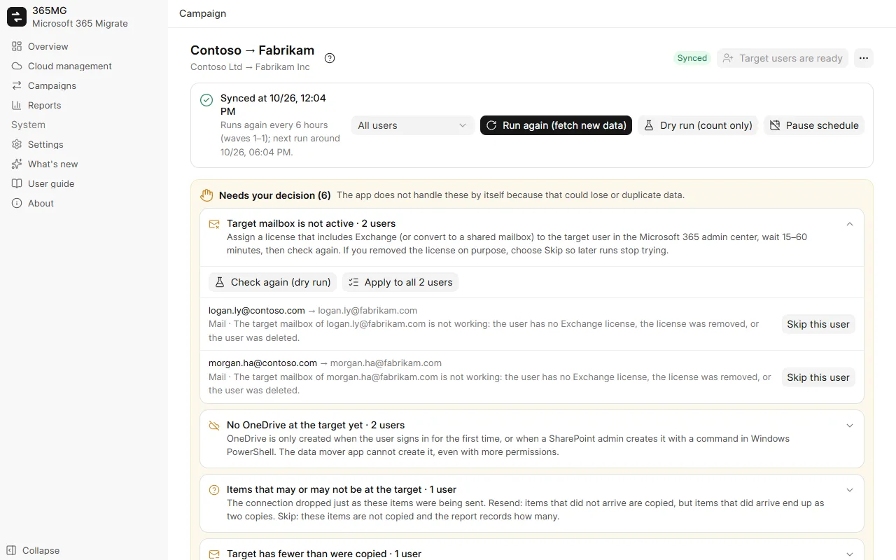

Microsoft 365 and Google Workspace
Connect any number of Microsoft 365 tenants and Google Workspace accounts, then copy in any direction: Microsoft ↔ Google, Microsoft → Microsoft, Google → Google.
Microsoft 365 ↔ Google Workspace migration
365MG copies mail, contacts, calendars, OneDrive and Google Drive, shared drives and groups between Microsoft 365 and Google Workspace, in any direction, from your own Windows PC. It keeps a journal of every item, runs again without duplicates, and stops to ask you whenever a choice could lose or duplicate data.

Connect any number of Microsoft 365 tenants and Google Workspace accounts, then copy in any direction: Microsoft ↔ Google, Microsoft → Microsoft, Google → Google.
Pick source users with filters, match them to target users automatically, assign a target domain and license in bulk, create the users that are missing.
Exports and imports every item through the Exchange mailbox API, folder by folder, with a journal per item so a stopped run carries on where it left off.
Copies files and folders, keeps created and modified dates, verifies every file by quickXorHash and downloads large files in resumable 64 MB ranges.
Recreates distribution lists and mail-enabled groups as Microsoft 365 groups with the same alias, members and owners.
Split users into waves, count what a run would copy without writing anything, then copy for real and keep syncing on a schedule until cutover.
Missing target mailboxes or OneDrives, recreated users, items with an unknown outcome: each lands in a "Needs your decision" list with the actions that settle it.
Source versus copied per user and in total, users that need a look, groups, and notes; export a self-contained HTML page or CSV.
English, Tiếng Việt, 简体中文, 한국어, 日本語, Deutsch, Русский, हिन्दी and العربية (right to left).
Every safeguard comes from something that went wrong while moving a 350-user company: mailboxes that lost their license mid-way, OneDrives that did not exist yet, connections that broke while sending.

365MG is distributed by its author. Write for an installer, a demo or help with a migration.